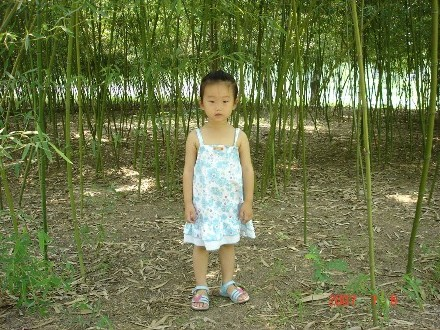
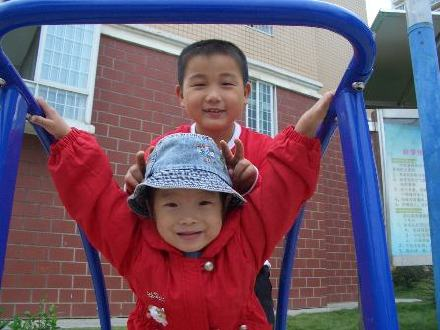
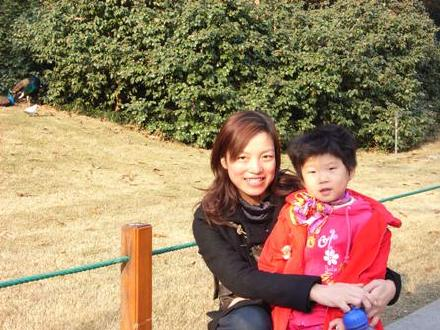
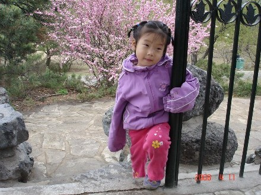

曼曼的幼儿园上了3个月，性格上显露出两个大弱点：第一，她在幼儿园特别的乖，每次老师都对她赞不绝口，可是回家之后脾气特别的大，稍不顺心就哭闹得厉害。我想她在幼儿园一定是极力压抑了自己的个性，所以回家之后需要发泄。有段时间每次把她从班车上接下来，她就急着要回家大便。我问她你在幼儿园为什么不大便呢，她说那样会把幼儿园弄得臭烘烘的。第二个弱点就是她对我过于依恋，只要我在家，就什么事情都要我陪着，比如喝水要妈妈给倒，出门玩要妈妈领着，洗澡要妈妈给洗，睡觉也要妈妈陪着才肯睡。其实我不在家的时候，她还表现特好，但是我一回家她就变得特别粘人特娇气。

9月份，爸爸妈妈到北京来看我们，觉得曼曼真是娇气呀，又觉得我们这边的幼儿园条件不好，开始不停的撺掇我们把曼曼送到长沙去。撺掇久了，我开始认真地考虑这件事了：第一，换换环境，一定会增加孩子的适应能力，再说长沙还有个9岁的哥哥，可以让曼曼体验一下兄妹的感觉；第二，曼曼很少和姥姥姥爷一起生活，所以和姥姥姥爷不亲，这样可以培养她和姥姥姥爷的感情；第三，爸妈家楼下就是科大幼儿园，条件很好，在湖南省都很有名气；第四，曼曼出生起就没有离开过我们，这种生活模式持续了几年的时间，现在有机会了，我也真有些想变变环境，再重温一下和老公的二人世界。于是，十一长假的时候，我和爸妈一起把曼曼带回了长沙。担心天天给她梳小辫太麻烦，我给她剪成了短头发。
我从长沙回来的时候，曼曼到火车站送我。她在车厢里玩了一会，姥姥姥爷说要带她去坐碰碰车，她马上乖乖的心甘情愿的跟着姥姥姥爷就走了。孩子毕竟是孩子。
之后的几天，她白天都玩得很高兴，但是到了晚上睡觉的时候，就会眼泪涟涟的说要妈妈。每次我在电话里听了都很难过。大概过了不到一个礼拜，我照例晚上打电话过去，等了半天之后，我姐姐过来告诉我曼曼正在和哥哥玩，怎么叫也不来接电话。我啼笑皆非的拿着话筒，心里又惊又喜又失落。孩子的适应能力还真强呀。曼曼就这样开始了她在长沙的生活。

曼曼在长沙生活的很快乐。由于在北京已经上了几个月的幼儿园，所以在长沙上幼儿园一天都没有哭，非常适应。她每天户外活动的时候，姥姥经常在幼儿园门外看看她，她看见姥姥会高兴的摆摆手。姥姥给她准备的小床，她一天都没有睡，有时候和大姨妈睡，有时候和姥姥姥爷睡。倒是我和郭嘉的生活，远没有想象中的精彩。十一过后他就开始加班，每天工作到九、十点钟，我经常在办公室等到八、九点钟之后，再开车到阜成门接他，然后我们一起在那里的一家湘菜馆吃晚饭，很晚才回家。曼曼没走的时候，我们还经常忙里偷闲看看电影，然后回家后蹑手蹑脚的看看熟睡的曼曼；曼曼走了之后，我们俩居然一场电影都没有看过。曼曼没几天就习惯了离开爸爸妈妈的生活，倒是我和郭嘉，经常晚上回来在各个空荡荡的屋子里窜来窜去，一时间还真难以适应。
这样过了两个月，我们对曼曼的思念与日俱增。这时爸爸得到一个到杭州疗养的机会，要带曼曼到杭州待半个月。于是我们举家南下，名副其实的举家——我、郭嘉还有曼曼的爷爷奶奶一起杀奔杭州，和曼曼相聚在美丽的西子湖畔。曼曼第一眼见到我和郭嘉的时候，一点都没有认生，直接叫着妈妈就扑到我的怀里，就好像每天都在我身边似的。抱着曼曼瘦瘦小小的身体，我真不想再离开她了。杭州真是一个美丽的城市，四天里，我们带着曼曼漫步白堤，泛舟西湖，游遍了这里的名胜古迹。最后一天我们去了一个叫西溪湿地的地方。这里的游人还不多，遍布着沼泽和河道，还保留着比较原始和健康的生态环境，曾是一些名士隐居之处。这段时间，关于工作的种种问题一直困扰着我，此刻看着曼曼天真烂漫的笑颜、听着屋檐外的雨滴敲打着河边丛生的芦苇，真的不想回北京了。有了孩子之后，我感触最深的就是：她天使一般的小脸和声音，即使在你心情最灰暗的时候，也可以像阳光一样赶走你心底的阴霾。不需要任何思考，我可以最简单也最真切的看到生活的意义。

可是现实总是无法逃避。四天后我们又打点行囊准备出发了。曼曼刚听说我们要走的时候，大哭着不让我们走。但后来我给她讲了半天道理，她也看到这是无法改变的事实，居然就默默地接受了。我们走的时候她还帮我们拉箱子，我们坐上的士的时候她脸上很不高兴的表情，也不说话，但是居然没有掉眼泪。后来妈妈告诉我，晚上睡觉的时候，小家伙双手撑着头趴在床上，告诉姥姥：“我好想我妈妈呀，我想的都睡不着觉了”，说着眼睛就湿了，但是她就哭了这么一会儿。
杭州之行唯一的美中不足是游览白堤或者湿地的时候，天气很凉，我们刚走曼曼就病了，从杭州准备回长沙的时候就开始发烧，回长沙的火车上一晚上吃了两次退烧药，回长沙后就到医院去打吊瓶了。这次发烧十分凶险，居然在医院打了一天吊瓶之后烧还没退，而且烧到41度。爸爸妈妈整天整夜地守着曼曼，折腾得够呛。这也让我感到不能让曼曼继续在长沙待着了。爸爸妈妈年纪都大了，还能经得起几次这样的折腾呢。而且曼曼虽然从心理上很快适应了长沙的生活，但是身体一直无法适应，在长沙基本上每个月都要发烧。以前在北京发烧都是吃点药就好了，从没打过吊瓶，在长沙吃药从来不管用，每次都是打吊瓶才能退烧，而且在长沙第一次咳嗽断断续续持续了一个多月才好，以后发烧好了之后都要咳嗽一段时间。长沙的冬天没有暖气，天气很冷，在北京生活了几年之后，我春节回长沙的时候就很容易感冒，曼曼从小在北京长大，可能真的很难适应长沙的气候。
春节前，我和郭嘉回到长沙，准备把曼曼接回北京。曼曼真的长大了，个子长高了，说的话也明显更有内容了。她告诉我：“有一天我在幼儿园里突然好想妈妈，想得我都要哭了”。还告诉我说：“幼儿园里别的小朋友都是整天叫爸爸妈妈，就我整天叫姥姥姥姥的。我告诉他们，我的爸爸妈妈在北京呢。”小小的人，说的话让人特别心疼。

曼曼欢呼雀跃的和我们一起回到了北京。比起几个月之前，曼曼胆子变大了，出门的时候敢和别人打招呼了，也敢和别人交谈了。小区里的人都说曼曼变得比以前大方多了。幼儿园的老师也说曼曼比以前敢说话了，还主动跑去告诉老师“丹丹是我最好的朋友”。曼曼的小脾气还是很大，也还是会哭闹，但是也许是长大了些，批评了几次之后就好多了。有一次，我正在批评她呢，她突然对我说：“妈妈，你别老批评我了，我真的好爱你的”，让人忍不住觉得，和她爱我这件事比起来，她的那些小错误又算得了什么呢。曼曼的心理和性格在长沙的生活中，还是得到了有益的锻炼和健康的成长。